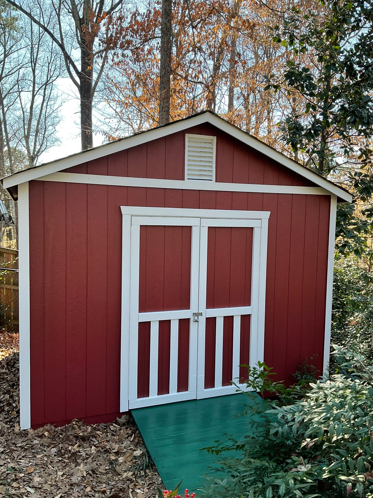
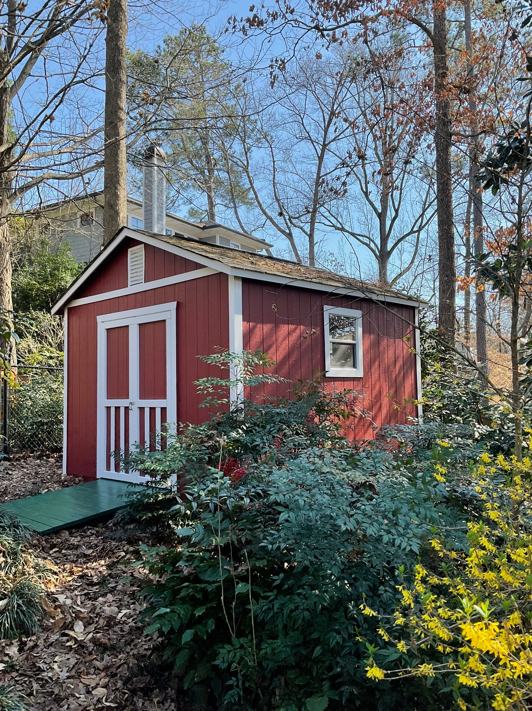
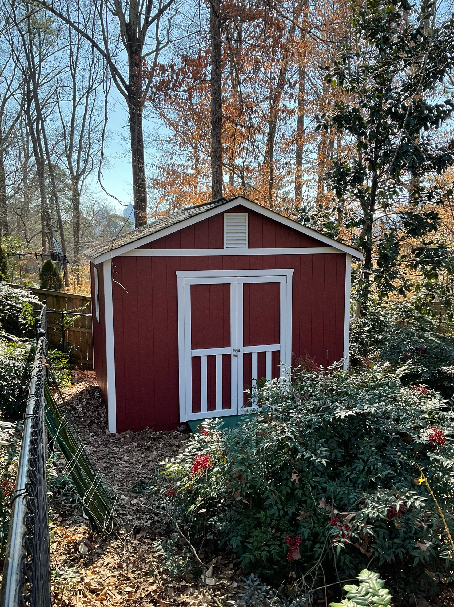
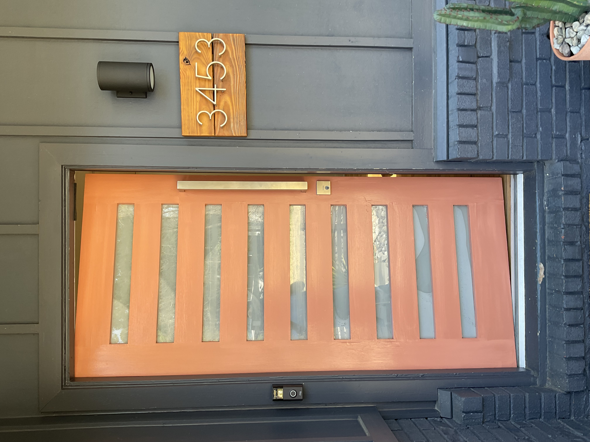
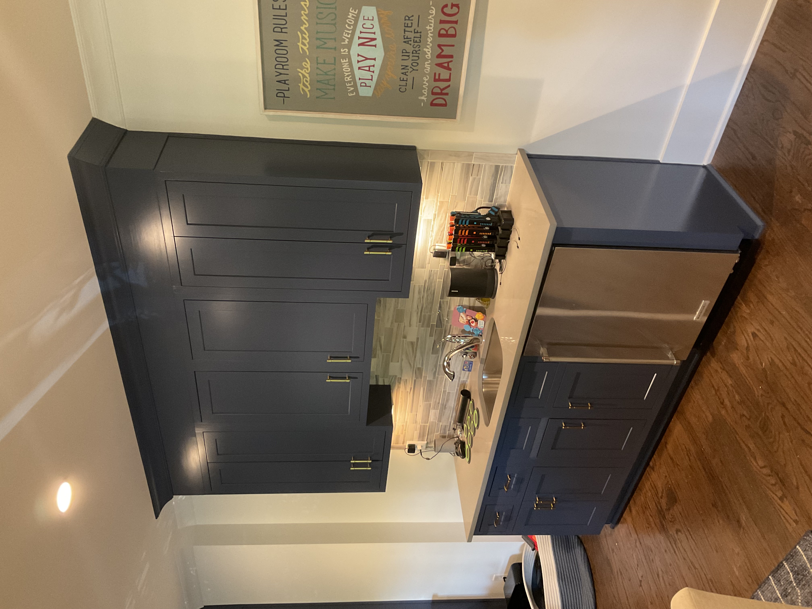
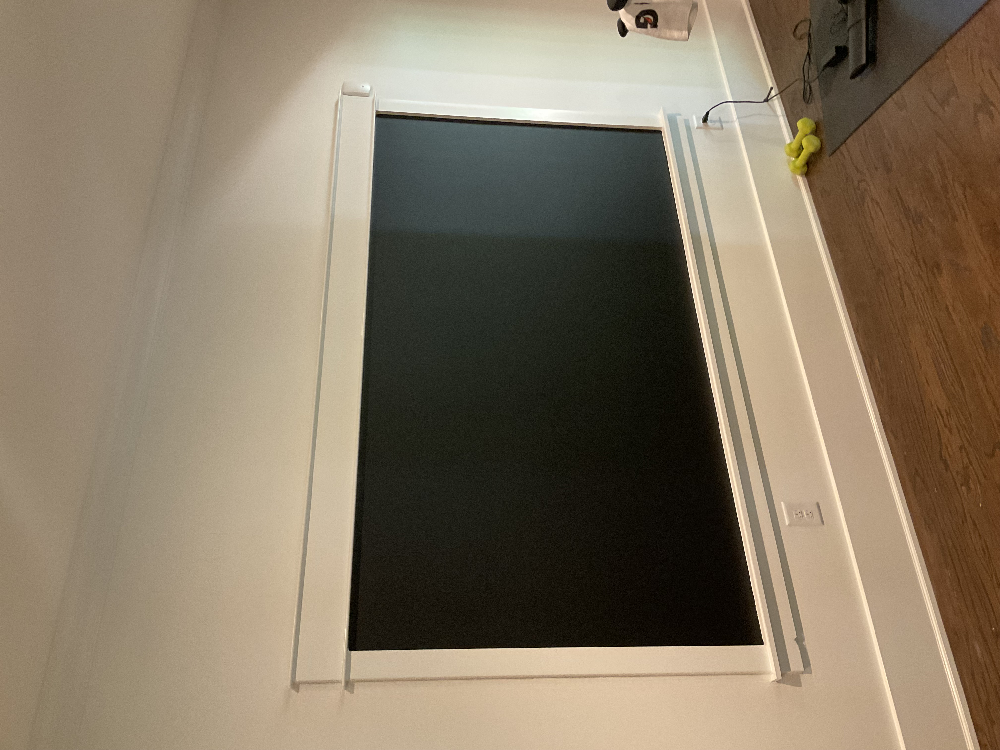

Cabinet Painting
Give your kitchen or bathroom a fresh look without the cost of a full remodel — just clean, professional cabinet painting.
Get a Free EstimateWhat We Do
We transform dated or worn cabinets into a clean, like-new finish. Our process includes thorough cleaning, light sanding, and priming before applying a smooth, even topcoat. Whether you want a bold color change or a simple refresh of your existing tone, we deliver results that look factory-finished and hold up to daily use.
Our Work






Why Choose Us
- Proper Surface Prep — We clean, degrease, sand, and prime every cabinet so the finish bonds correctly and lasts.
- Smooth, Even Finish — We use professional application techniques to eliminate brush marks and drips.
- Doors & Hardware — Cabinet doors are removed, painted separately, and rehung for a clean, consistent result.
- Any Color, Any Style — From classic white to bold two-tone designs, we'll match the look you're going for.
- Free Estimates — We give you an honest, detailed quote before any work begins. No surprises.